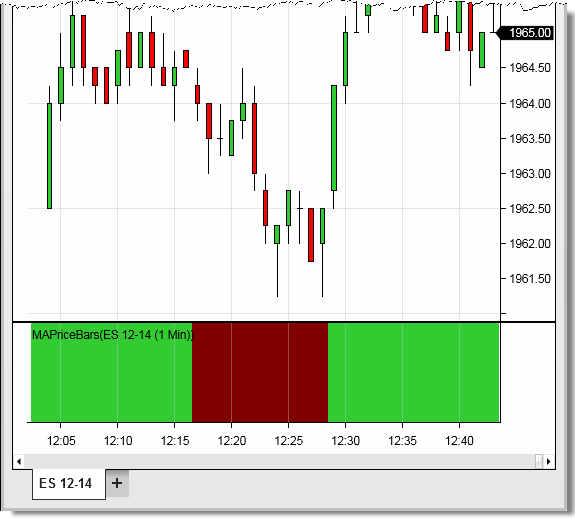

|
<< Click to Display Table of Contents >> BackBrush |


|
BackBrush
|
<< Click to Display Table of Contents >> BackBrush |
|
Sets the brush used for painting the chart panel's background color for the current bar.
Note: This property will only set the back color for the panel the indicator is running. To set background color for all panels, please see the BackBrushAll property. |
A Brush object that represents the color of the current chart bar.
BackBrush
Warning: You may have up to 65,535 unique BackBrush instances, therefore, using static predefined brushes should be favored. Alternatively, in order to use fewer brushes, please try to cache your custom brushes until a new brush would actually need to be created. |
protected override void OnBarUpdate() |
